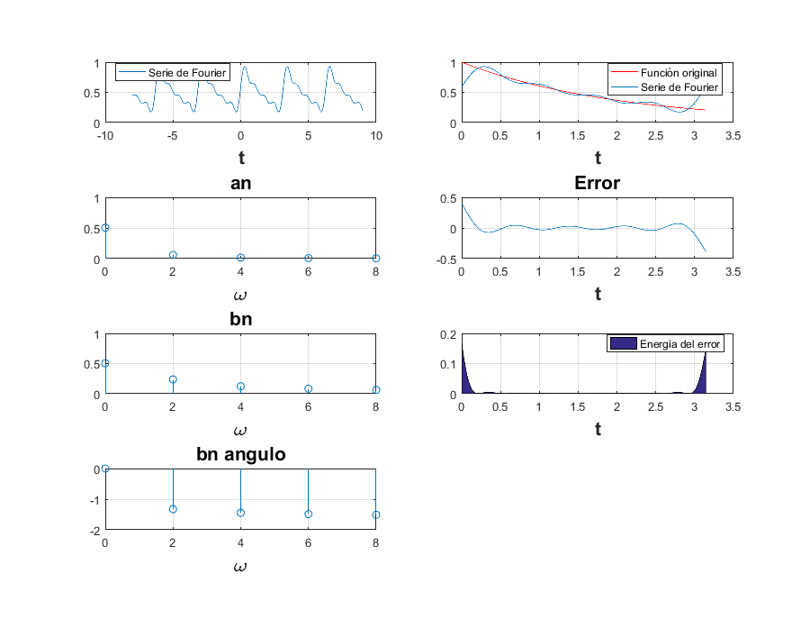
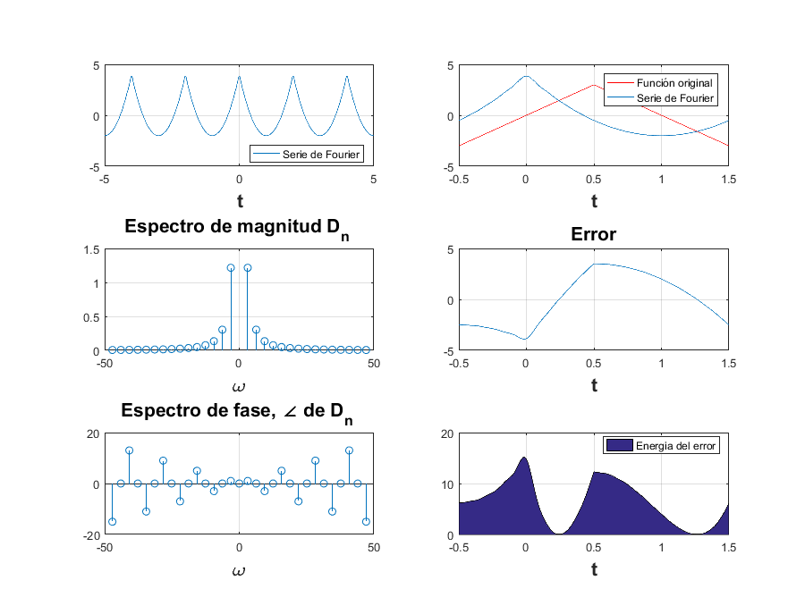
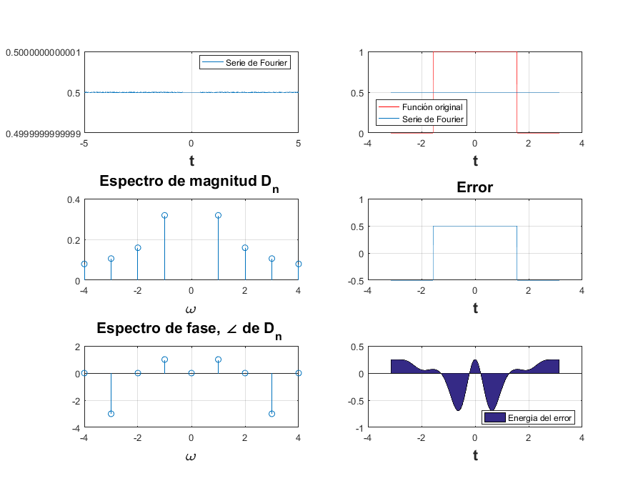

Práctica 5: Series de Fourier
Alvarado Balbuena Jorge Anselmo
Contents
Ejemplo 6.1 Con serie y espectro trigonometrico
t0=0; tf=pi; a0=0.504; an=@(n) 0.504.*(2./(1+16.*n.^2)); bn=@(n) 0.504.*(8.*n./(1+16.*n.^2)); f=@(t) exp(-t./2); armo=4; a=-8; b=9; SerieFourierTrigonometrica(t0, tf, a0, an, bn, f, armo, a, b, 1); SerieFourierTrigonometrica(t0, tf, a0, an, bn, f, 15, a, b, 2);
Ejemplo 6.2. Con serie y espectro exponencial y A=3
A = 3; d0=0; dn= @(n) (12/(n.*pi).^2); t0=-0.5; tf=1.5; f= @(t) 2.*A.*t.*(t>=-0.5 & t<0.5) + 2.*A.*(1-t).*(t>=0.5 & t<=1.5); armo=4; a=-5; b=5; SerieFourierExponencial25(t0, tf, dn, d0, f, armo, a, b, 3); SerieFourierExponencial25(t0, tf, dn, d0, f, 15, a, b, 4);
Ejemplo 6.4. Con serie y espectro exponencial
d0=0.5; dn= @(n) 1./(n.*pi); t0=-pi; tf=pi; f= @(t) 0.*(t>-pi & t<-pi./2) + 1.*(t>-pi./2 & t<pi./2) + 0.*(t>pi & t<pi./2); armo=4; a=-5; b=5; SerieFourierExponencial25(t0, tf, dn, d0, f, armo, a, b, 5); SerieFourierExponencial25(t0, tf, dn, d0, f, 15, a, b, 6);
Warning: Imaginary parts of complex X and/or Y arguments ignored Warning: Imaginary parts of complex X and/or Y arguments ignored Warning: Imaginary parts of complex X and/or Y arguments ignored Warning: Using only the real component of complex data. Warning: Imaginary parts of complex X and/or Y arguments ignored Warning: Imaginary parts of complex X and/or Y arguments ignored Warning: Imaginary parts of complex X and/or Y arguments ignored Warning: Using only the real component of complex data.
Ejercicio 6.5. Con serie y espectro exponencial
d0=0.504; dn= @(n) 0.504/(1+4*n*1i); t0=0; tf=pi; f=@(t) exp(-t./2); armo=4; a=-7; b=7; SerieFourierExponencial25(t0, tf, dn, d0, f, armo, a, b, 7); SerieFourierExponencial25(t0, tf, dn, d0, f, 15, a, b, 8);
Ejemplo 6.7. Con serie y espectro exponencial y sin incluir la gráfica de f, error ni energía del error
d0=1/3; dn= @(n) 1/3; t0=-4; tf=4; armo=4; a=-7; b=7; SerieFourierExponencialDirac(t0, tf ,dn ,d0 ,armo ,a ,b, 9); SerieFourierExponencialDirac(t0, tf ,dn ,d0 ,15 ,a ,b, 10);